Round 3, version 2a
Open rows
Value rows with any number of rows open at once; open rows stay open as you select other shapes.
How it works
Open rows keeps Value rows: every property is a row that shows its current value in a field, and clicking the field opens the row in place. The difference is that any number of rows can be open at once, and they stay open as you select other shapes and when you reload. Open Stroke and Background once, and every shape after that takes one click per change, as in today's always-open panel, while the rows you don't use stay closed. It answers the extra click that Value rows adds, which a practice study with fictional results found people who restyle many shapes feel most. With two or more rows open, Close all brings back the short summary in one click. The rows scroll inside the panel, so it never covers the selection.
What works
- The rows you use stay one click away: open Stroke and Background once, then restyle shape after shape with one click per change, as in today's panel.
- Nothing opens by itself. The open rows are your own arrangement, and they're kept as you select other shapes and when you reload.
- It stays calm when tall: the rows scroll inside the panel, Close all and the layer and action buttons stay in view at its foot, and the panel stops short of the selection and never moves the drawing.
- Getting back is quick: Close all returns the short summary in one click, and Escape closes only the row you're in.
What doesn't
- The first change on a row still takes two clicks: open it, then pick.
- With many rows open the panel gets tall and busy again, close to today's.
- Closing is up to you. Rows still open after a reload, or days later, can surprise someone who doesn't remember opening them.
- On the phone, a tray with several open rows covers more of the drawing above the bar.
In pictures

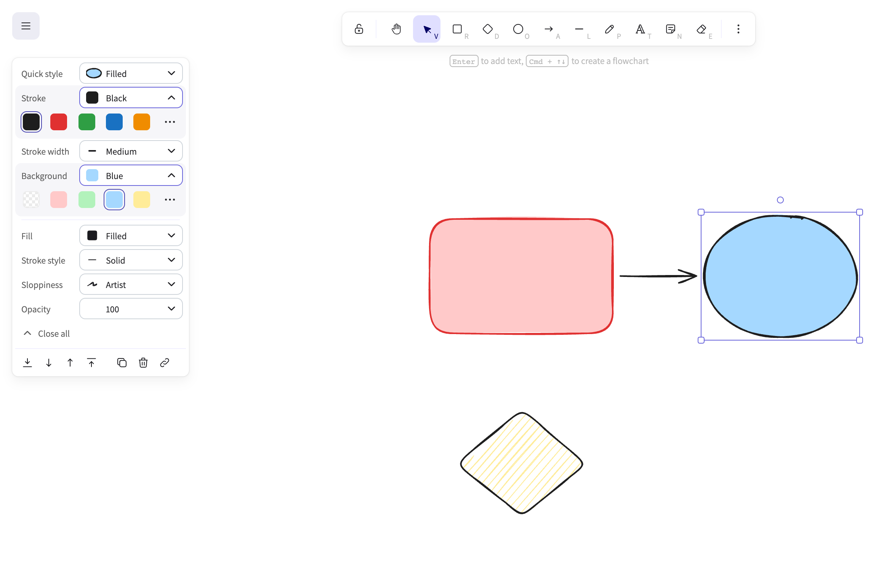

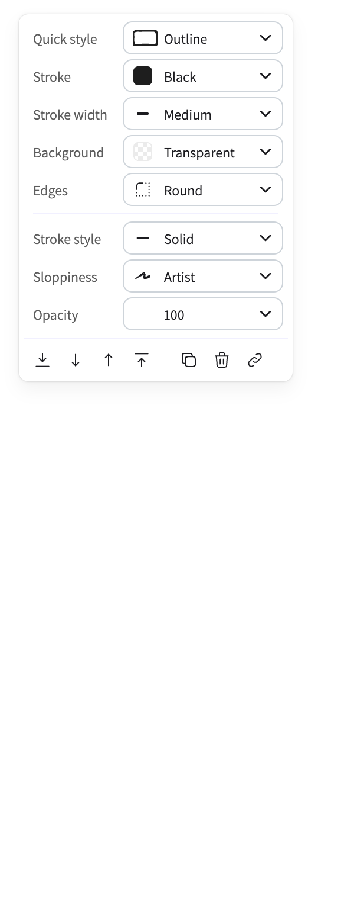

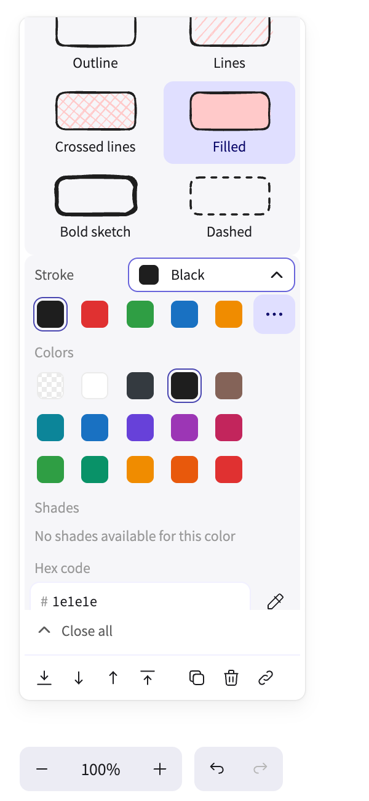

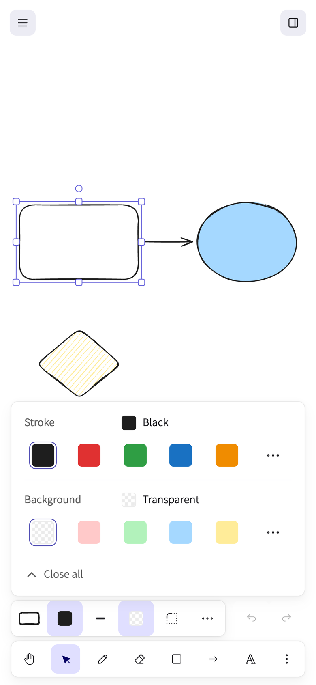
Code
- Branch
lab/panel-v2a- Worktree
labpanel-v2a-overnight-run
Round 3, version 2b
Pinned rows
Value rows where the rows you pin stay open everywhere; the rest open one at a time.
How it works
Pinned rows keeps Value rows: every property is a row that shows its value in a field, and clicking the field opens the row in place. Each row also has a pin. A pinned row stays open for every shape you select and after a reload, and it stays where it is in the list. The rows you don't pin open one at a time. Stroke starts pinned, so the panel shows what a pin does before anyone touches one. It answers the extra click that Value rows adds for people who restyle many shapes: pin Stroke and Background, and every change after that is one click. It also answers a known limit of accordions that close one section when another opens: they stop people from combining sections (NN/g). On the phone nothing starts pinned, and pinned rows stack in the tray above the bar.
What works
- The rows you change most stay one click away, for every shape you select and after a reload, without opening the whole panel back up.
- Pins stay in place, so nothing jumps when you pin or unpin, and the rows keep the same order for everyone.
- The default Stroke pin shows what a pin does without any text, and one rule holds everywhere: an accent pin means an open row, with the mouse, the keyboard or a screen reader.
- Everything you don't pin keeps the short summary: those rows open one at a time, and opening one closes the last.
What doesn't
- Every row carries a pin, so the panel is a little wider (16.25rem instead of 14.5rem) and a little busier at rest.
- Two pinned color rows make the panel taller, and pinning many rows brings back a tall panel. It scrolls inside itself, and the layer and action buttons scroll with the rows.
- A pin is a small control that is easy to overlook. The default Stroke pin is the only thing that shows what one does, and on the phone nothing starts pinned.
- Closing a pinned row also unpins it, so there is no way to put a pinned row away for a moment and keep it pinned.
In pictures

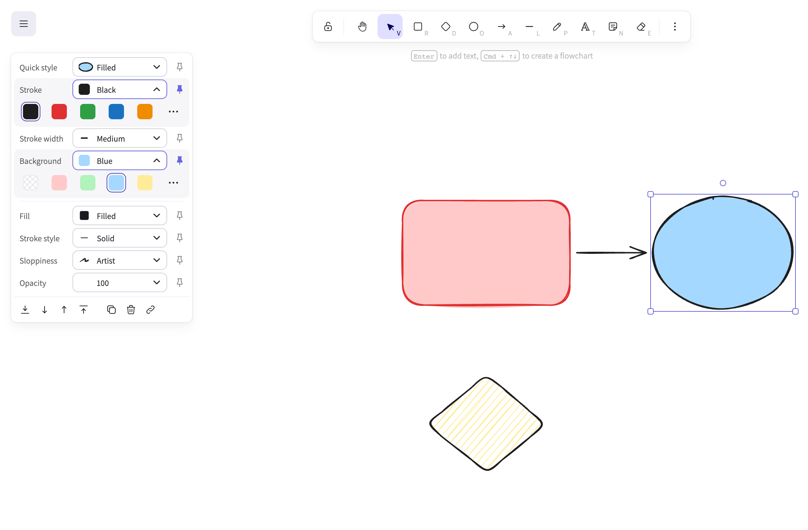

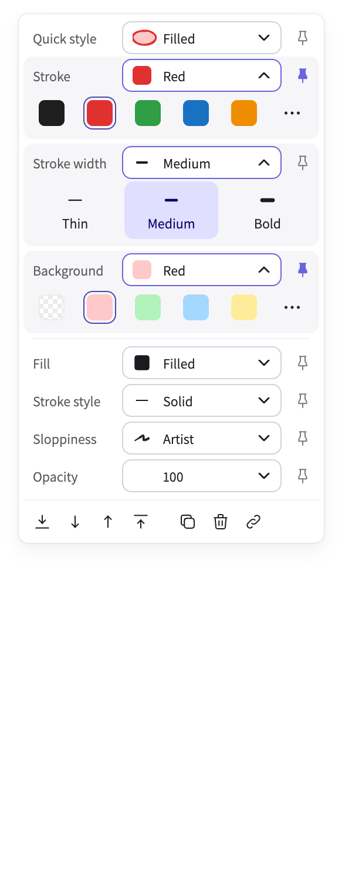

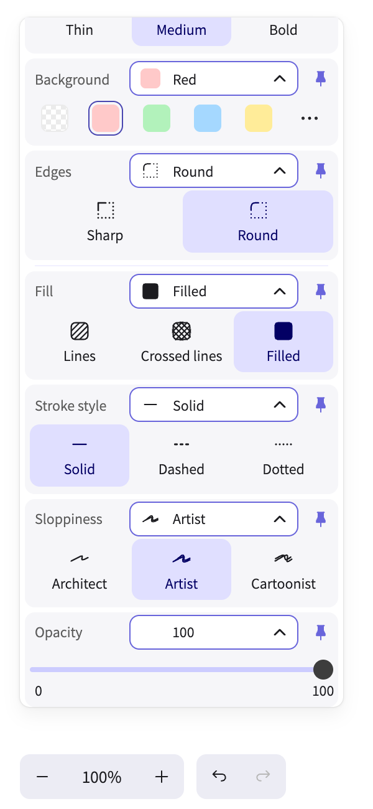

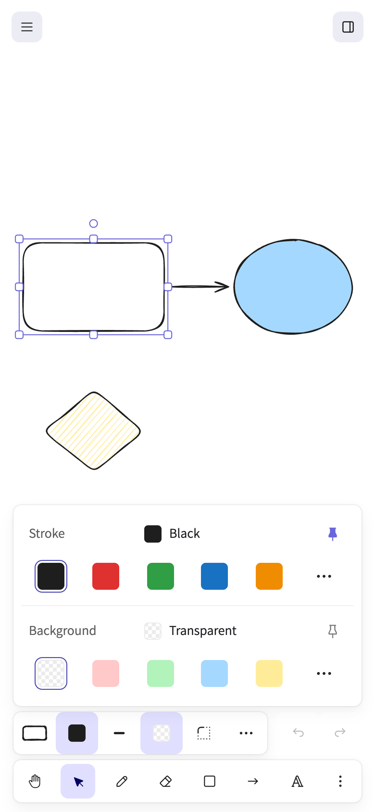
Code
- Branch
lab/panel-v2b- Worktree
labpanel-v2b-pinned-rows-setup
Round 3, version 2c
Recent styles
Value rows where Quick style also offers the last few whole styles you applied, one click each.
How it works
Recent styles keeps Value rows: every property is a row that shows its value in a field, and clicking the field opens the row in place. It adds one thing, inside Quick style: up to four whole styles you applied through the panel come first, under Recently used, each a tile drawn in its own colors. A tile carries the full style, from colors and fill to edges and opacity. Style one shape row by row, select the next, and one click on the tile copies that style; with Quick style left open, each shape after that is one click too. It answers the extra click Value rows adds, which a practice study with fictional results found people who restyle many shapes feel most. Applying a recent style also sets the style of the next shape you draw, as any change in the panel does today.
What works
- Restyling shape after shape takes one click: with Quick style open, select a shape and click its tile, and the whole style comes across with no row to open.
- Nothing to set up: the styles you apply are kept for you, newest first, through a reload; applying a tile never moves it, and the one you keep using never falls off.
- Each tile shows its style in its own colors on the selected shape's type, so finding one is recognizing it, not reading it.
- The panel stays as calm as Value rows: Recently used only appears inside Quick style, and only once you've styled something.
What doesn't
- A recent style only helps once you've made it: the first shape still takes two clicks per change, and so does a one-off change, like only the stroke.
- The tiles have no visible names, so two close styles can look alike (screen readers get each one's full name).
- Quick style gets one line taller when recent styles show.
- Applying a recent style also sets the style of the next shape you draw, as every change in the panel does today, and that carried-over style is known to confuse people.
In pictures

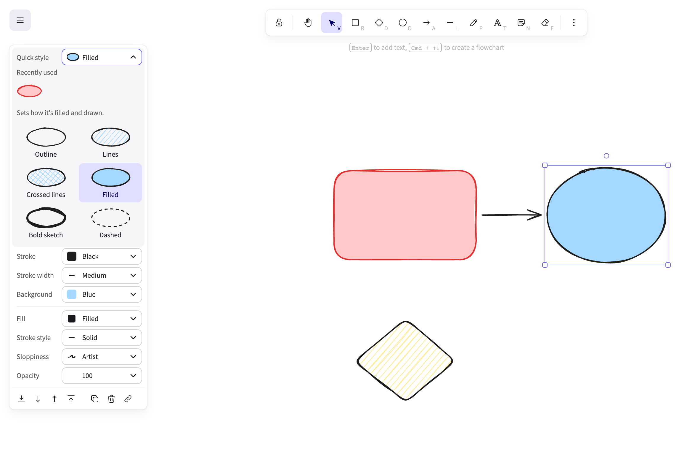

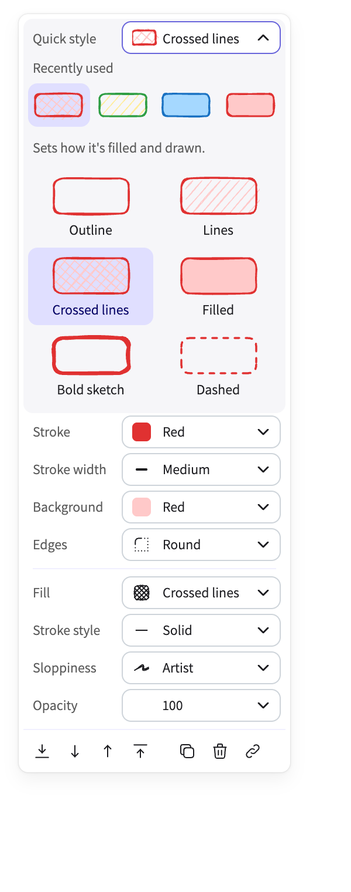

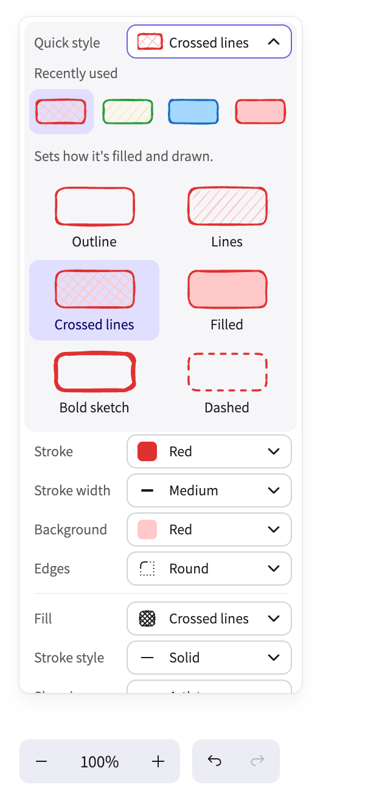

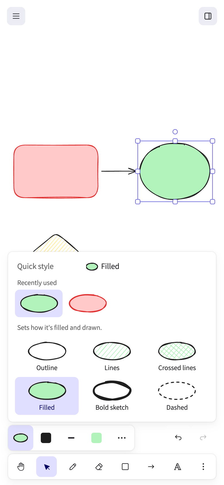
Code
- Branch
lab/panel-v2c- Worktree
labpanel-v2c-autonomous-work
Round 3
Side by side
The same task in each version: give the ellipse the rectangle's red stroke and light red fill. These are the panels right after the ellipse's last click.

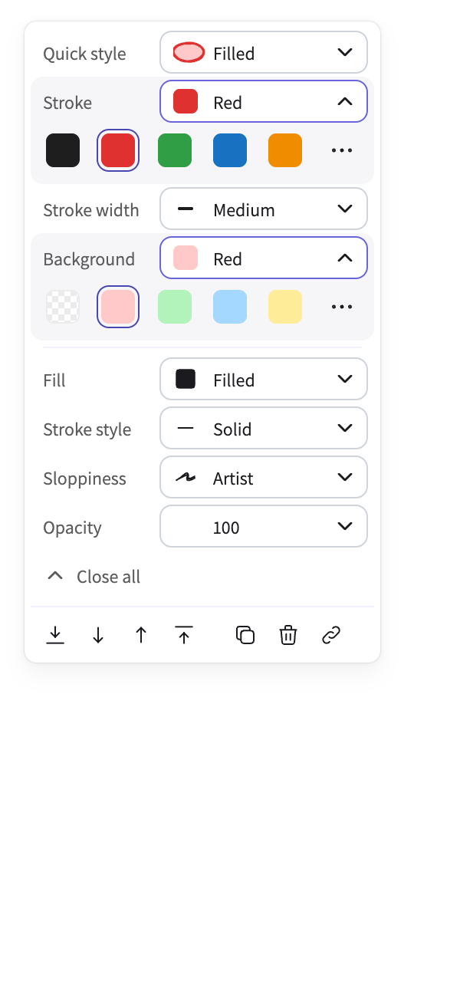

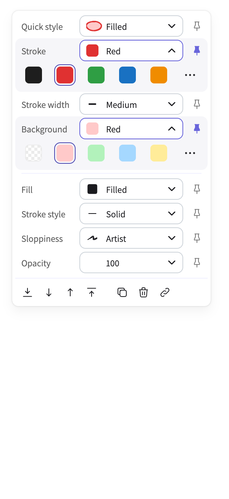

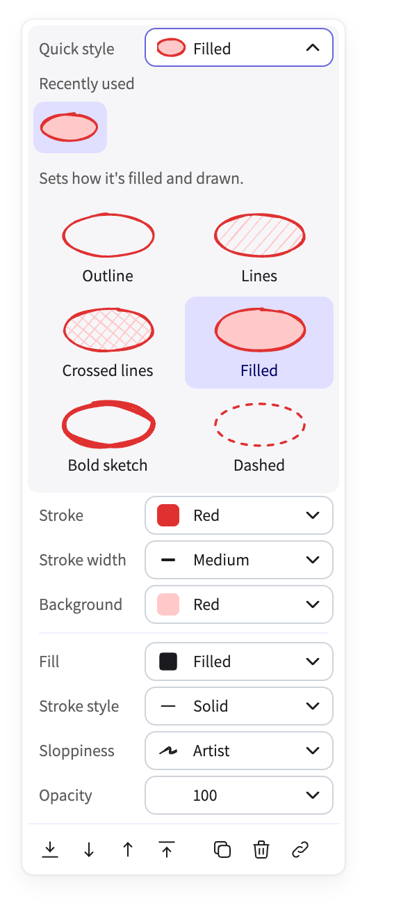
Round 2
Value rows, as picked
One row per property shows its current value; open one row at a time to change it, right there.
How it works
Value rows turns the panel into a short summary of the selected shape: one row per property, with its name and current value (Stroke: Black). Open a row and its choices appear right under it as a grid, each with the product's icon over its name. One row is open at a time, and the panel never gets wider.
What's new, from the team's feedback:
- Looks is the first row. It names the look the shape matches (or Custom) and opens six named looks, drawn in the shape's own colors. One click applies a whole look, and one undo takes it back.
- Stroke width sits right after Stroke.
- Colors show five top picks. The last cell opens the full palette in place, so nothing opens beside the panel.
- It works with a keyboard: arrow keys move between rows, Enter opens one and Escape closes it. Screen readers announce each row's name and value, and every change.
- Opening a row never pans the canvas or covers the selected shape; the panel scrolls instead.
- On a phone, Looks, Stroke, Stroke width, Background and Edges are chips along the bottom, and each opens its grid in a tray above the bar.
What works
- You can read the whole style at a glance, and the first row names the whole look.
- Closed, it's about half as tall as today's panel (310 px against 610 px), and every control is still in it.
- Every change is the same two steps with a mouse, a finger or a keyboard: open the row, then pick.
- Nothing opens beside the panel, and the canvas stays put.
What doesn't
- A change still takes one more click than today's always-open panel.
- With the full palette open, a color row gets tall, so the panel scrolls on a small laptop.
- A few new labels (Looks, Custom and the look names) aren't in the product's translations yet.
What changes
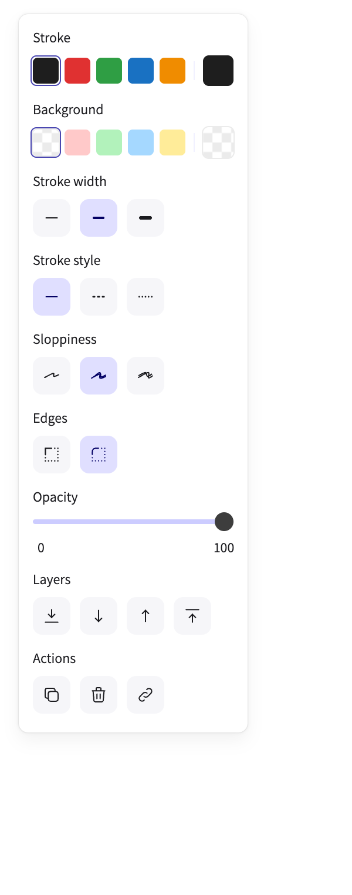

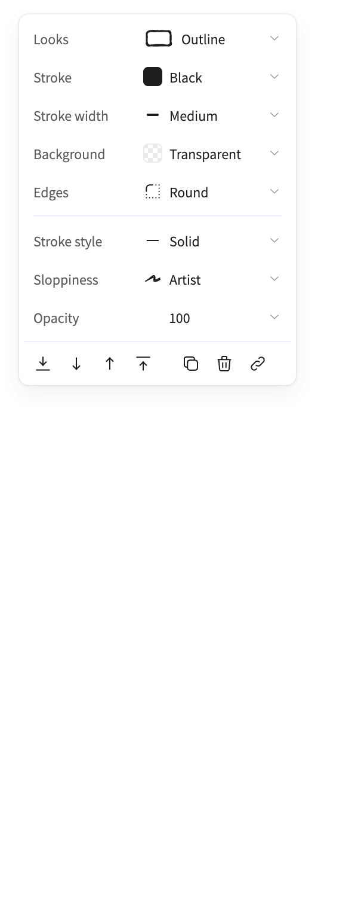

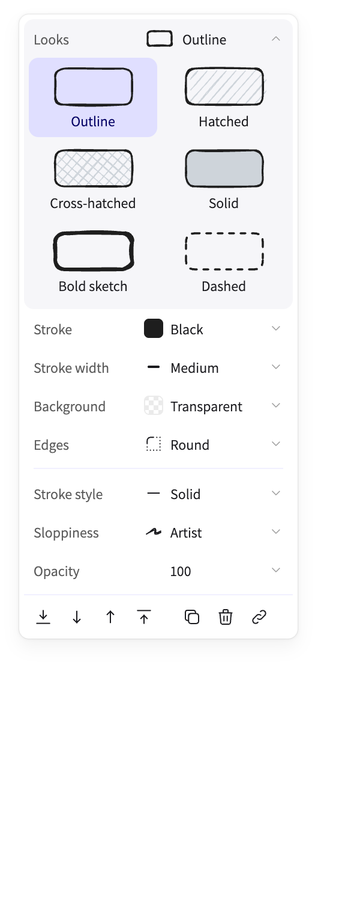

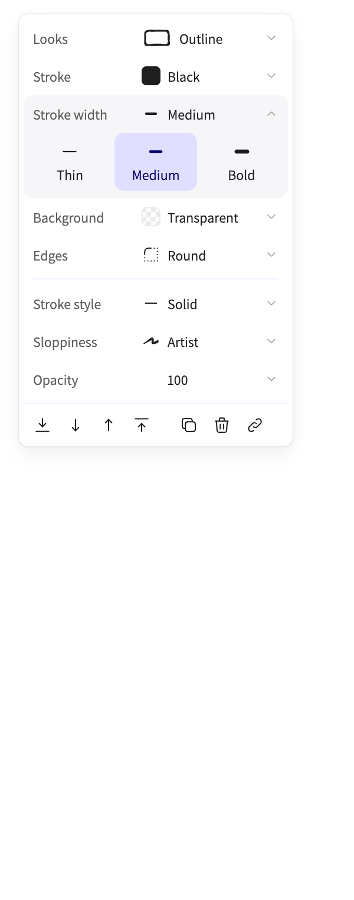

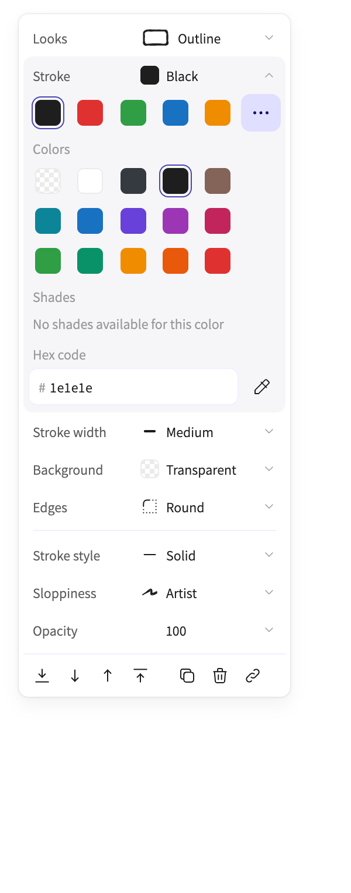

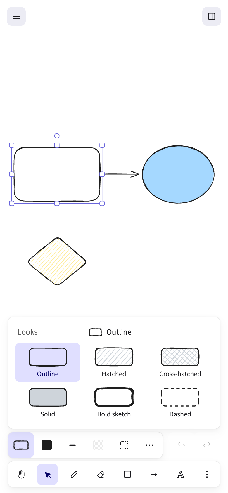

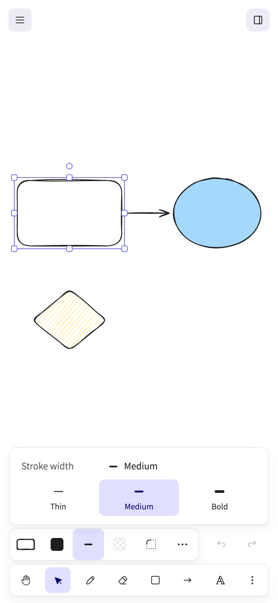

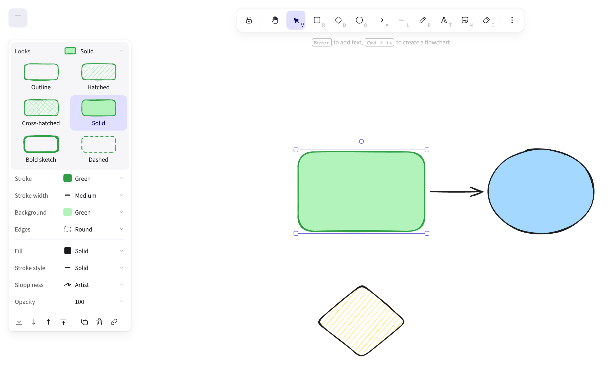
The first version, on video
This video shows the first version. The panel has changed since then, and the screenshots above show it now.
Code
- Branch
lab/panel-v2- Worktree
properties-panel-v2-value-rows- Draft pull request
- Pull request #2
The code is in a private repository, so the branch and pull request links only open for its owner.